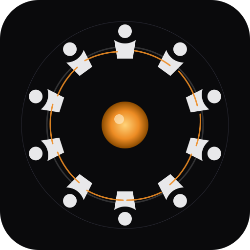
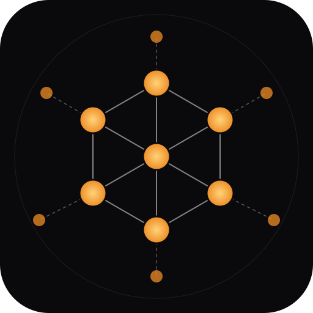
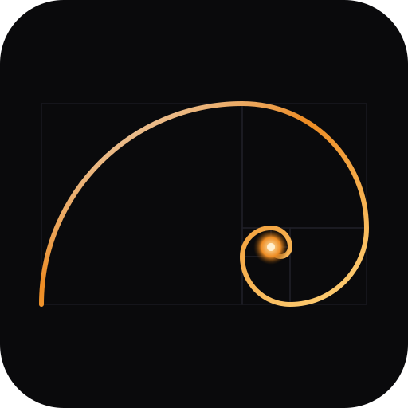
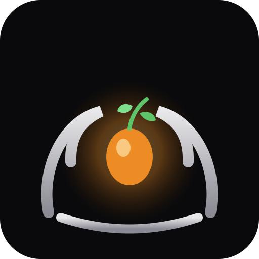
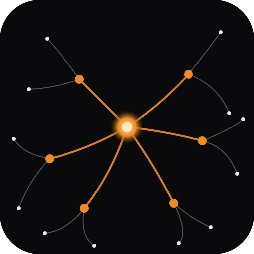
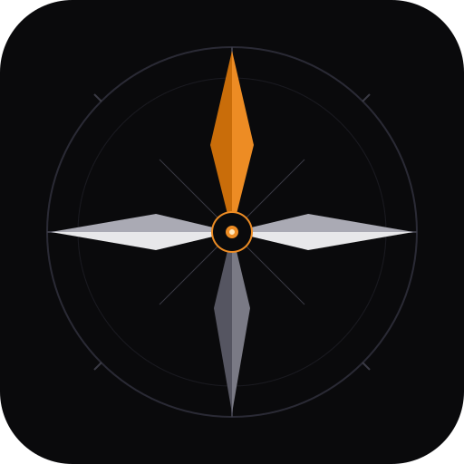
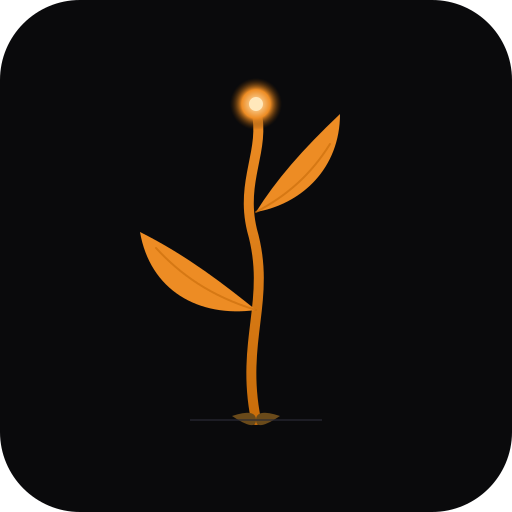
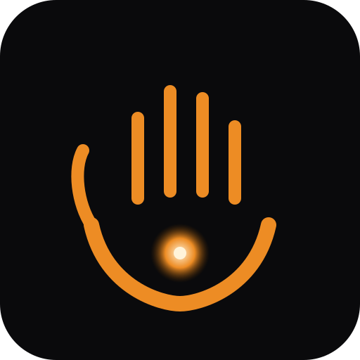
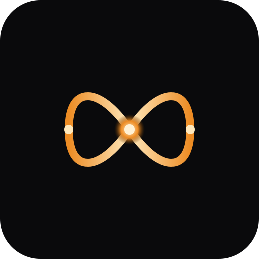

Nine directions, same palette. Each tile is the full icon; the strip below shows how it reads at favicon sizes (64, 32, 16 px).

Ten identical figures circle a shared hearth. No one above, no one below. The warmth at the centre is the platform itself — what the community is built around.

A hexagonal peer-to-peer web. The centre is a node like any other; outer peers connect in by thin reach-lines, showing the mesh is open — any new server can join.

The natural-world expression of "grows forever, stays in proportion to itself." Ties directly to the Fibonacci homestead layout and the infinite-of-X principle. Glowing seed at the origin.

Two curved arms cradle a luminous seed from which a small sprout emerges. Captures the core mission in one glyph: identity held, potential nurtured, capability growing.

The hidden root system that ties forests together underground. Each person is a node, messages flow invisibly beneath the surface, the network nourishes every member. The soft, biological version of the Federation Mesh.

The universal symbol of "you are not lost." The north point is accent orange — the project's forward vector toward coordination and shared capability. Other cardinals are quiet neutrals so the direction reads immediately.

A seed unfolds into a structure that did not exist before, reaches up, starts photosynthesising. End poverty through capability, not charity. Two opposed leaves at different heights so it reads as alive rather than symmetrical.

Everything here is CC0: no permission needed, belongs to everyone forever. A cupped palm with fingers rising, a glowing gift resting in the centre. The universal gesture of "here, take this" with nothing expected in return.

The mathematical shorthand for "no upper bound." HumanityOS designs explicitly for infinite users, infinite planets, infinite items — the infinite-of-X rule is non-negotiable. The crossover at the centre is where the infinite becomes one thing.